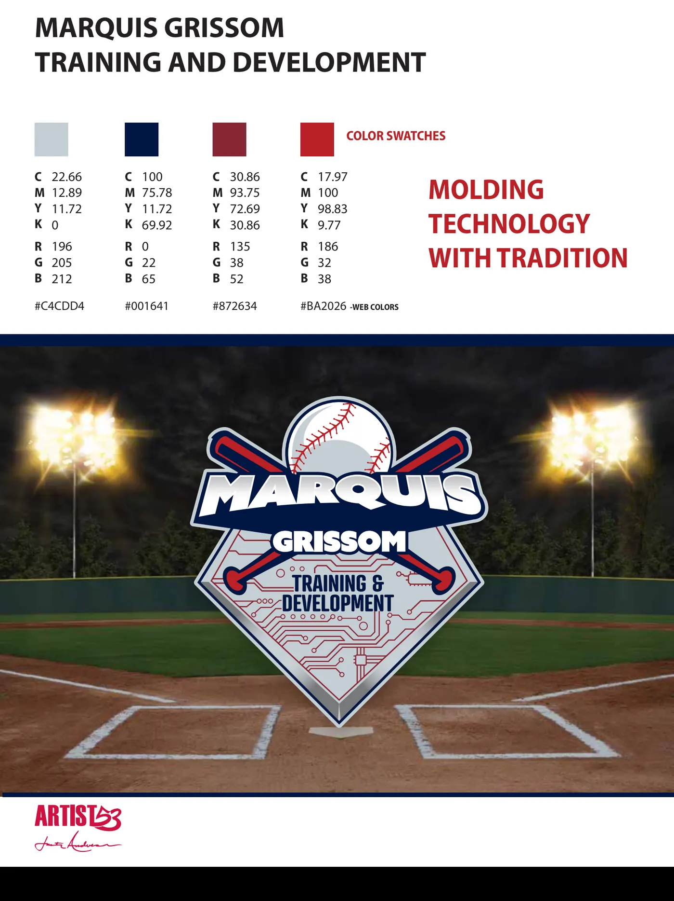
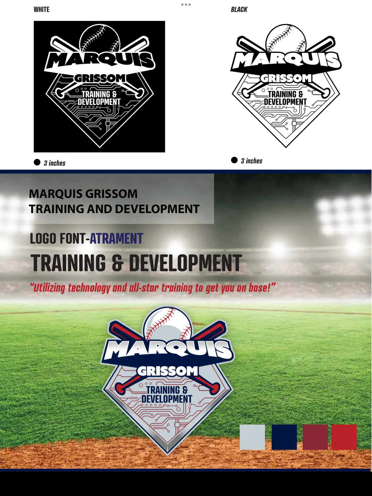
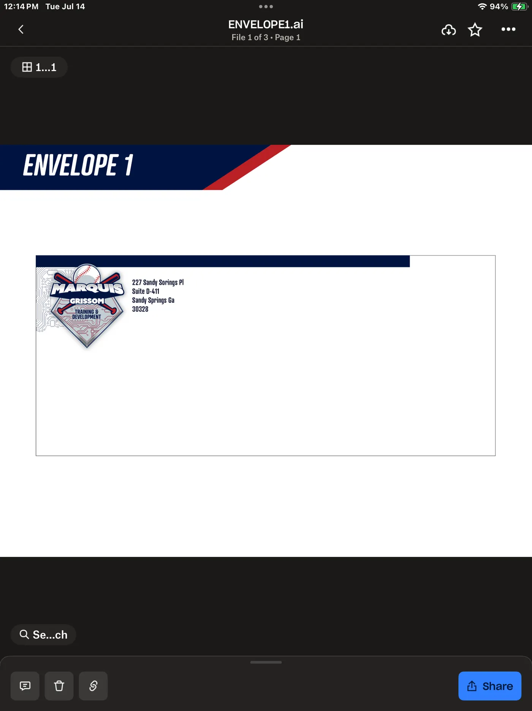

Logo Design Case Study
Marquis Grissom Training & Development
A baseball identity that brings traditional sports imagery together with a technology-driven training message.
View The ProjectBack To LogosBrand Identity
Molding Technology With Tradition
This identity combines baseball tradition with a technology-driven training approach. The home plate shape, crossed bats, baseball and circuit-board details work together to show where the program comes from and where it is going.

Logo System
Built To Work In Every Format
The mark was prepared in full color and single-color versions so it could stay clear across uniforms, print materials, signage and digital applications.

Brand Application
Ready For The Real World
The identity was extended into stationery and presentation materials to make sure the brand felt consistent beyond the logo itself.
